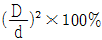
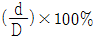
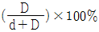
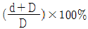
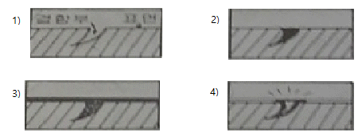
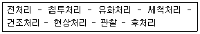
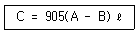

침투비파괴검사기능사 (2015-01-25 기출문제)
1과목: 침투탐상시험법(대략구분)
1. 자분탐상검사에 관련된 용어로 틀린 것은?
- 투시율
- 자속밀도
- 접촉각
- 반자장
(정답률: 60%)

2. 두께방향 결함(수직 크렉)의 경우 결함검출확률과 크기의 정량화에 관한 시점으로 가장 우수한 검사법은?
- 초음파탐상검사(UT)
- 방사선투과검사(RT)
- 스트레인 측정검사(ST)
- 와전류탐상검사(ECT)
(정답률: 52%)
3. 다음 중 침투탐상시험 원리와 가장 관계가 깊은 것은?
- 틴달 현상
- 대류 현상
- 용융 현상
- 모세관 현상
(정답률: 91%)
4. 위상배열을 이용한 초음파탐상 검사법은?
- EMAT
- TRIS
- PAUT
- TOFD
(정답률: 64%)
5. 시험면을 사이에 두고 한 폭의 공간을 가압하거나 진공이 되게 하여 양쪽 공간에 압력차를 만들어 시험하는 비파괴검사법은?
- 육안시험
- 누설시험
- 음향방출시험
- 중성자투과시험
(정답률: 81%)
6. 자분탐상시험으로 크랭크 샤프트를 검사할 때 가장 적합한 자화방법은?
- 축통전법과 코릴법
- 극간법과 프로드법
- 전류관통법과 자속관통법
- 직각통전법과 극간법
(정답률: 43%)
7. 자분탐상시험에 대한 설명 중 틀린 것은?
- 표면결함 검사에 적합하다.
- 반자성체에 적용할 수 있다.
- 시험체의 크기에는 크게 영향을 받지 않는다.
- 침투탐상시험만큼 엄격한 전처리가 요구되지는 않는다.
(정답률: 72%)
8. 비파괴검사법 중 반드시 시험 대상물의 앞면과 뒷면 모두 접근이 가능하여야 적용할 수 있는 것은?
- 방사선투과시험
- 초음파탐상시험
- 자분탐상시험
- 침투탐상시험
(정답률: 64%)
9. 시험체의 도금두께 측정에 가장 적합한 비파괴검사법은?
- 침투탐상시험법
- 음향방출시험법
- 자분탐상시험법
- 와전류탐상시험법
(정답률: 68%)
10. 시험체에 가압 또는 감압을 유지한 후 발포용액에 의해 기포를 형성하는 기포누설시험 검사방법의 장점으로 틀린 것은?
- 지시관찰이 용이하다.
- 강도가 높다.
- 실제지시의 구별이 쉽다.
- 가격이 저렴하다.
(정답률: 64%)
11. 관의 보수검사를 위해 와류탐상검사를 수행할 때 관의 외경을 d, 시험코일의 평균 직경을 D라고 하면 내십코일의 충전율을 구하는 식은?




(정답률: 63%)
12. 다른 침투탐상시험과 비교하여 수세성 형광침투탐상시험의 장점은?
- 밝은 곳에서 작업이 가능하다.
- 대형 단조품 검사에 적합하다.
- 소형 대량부품 검사에 적합하다.
- 장비가 간편하고 장소의 제약을 받지 않는다.
(정답률: 70%)
13. 방사선투과시험과 초음파탐상시험을 비교하였을 때 초음파탐상시험의 장점은?
- 블로홀 검출
- 라미네이션 검출
- 불강대가 존재
- 검사자의 능숙한 검사
(정답률: 80%)
14. 비파괴검사의 목적이라 볼 수 없는 것은?
- 안전관리
- 사용 기간의 연장
- 출허 가격의 인하
- 제품의 신뢰성 향상
(정답률: 83%)
15. 침투탐상시험의 장점에 대한 설명 중 틀린 것은?
- 지시 판독이 간편하다.
- 제품의 크기에 구애 받지 않는다.
- 비철 재료나 세라믹 등에도 적용 가능하다.
- 검사체의 온도에는 전혀 영향을 받지 않는다.
(정답률: 83%)
16. 침투탐상시험에서 후유화성 침투제와 작용하여 물로 씻을 수 있도록 해주는 물질은?
- 유화제
- 현상제
- 물
- 장착제
(정답률: 84%)
17. 수세성 형광침투액과 습식현상제를 사용하여 침투탐상시험을 할 때 탐상절차에 따른 장치의 배열순서로 옳은 것은?
- 전처리대 → 세척조 → 침투조 → 현상조 → 건조대 → 검사대
- 전처리대 → 침투조 → 세척조 → 건조대 → 현상조 → 검사대
- 전처리대 → 침투조 → 세척조 → 현상조 → 건조대 → 검사대
- 전처리대 → 침투조 → 현상조 → 세척조 → 건조대 → 검사대
(정답률: 55%)
18. 섭씨 25℃ 는 화씨(°F) 온도로 몇 도 인가?
- 13°F
- 46°F
- 77°F
- 248°F
(정답률: 72%)
19. 침투액이 균열이나 갈라진 틈과 같은 미세한 개구부로 침투하려는 성질은?
- 포화 현상
- 모세관 현상
- 모서리 현상
- 수적방지 현상
(정답률: 87%)
20. 다음 그림에서 침투탐상시험의 세척처리와 현상처리가 실시된 것은? (단, 그림 1은 자연적인 결함부와 탐상 표면이며, 그림 2, 3, 4의 검은 부분은 침투처리된 것을 나타낸 것이다. 그림 1, 2, 3, 4의 사선은 시험체이다.)

- 그림 1과 2
- 그림 2와 3
- 그림 3과 4
- 그림 2와 4
(정답률: 75%)
2과목: 침투탐상관련규격(대략구분)
21. 침투탐상시험에 사용되는 다음 재료 중 솔로 도포할 수 없는 것은?
- 유화제
- 침투제
- 습식현상제
- 속건식 현상제
(정답률: 53%)
22. 다음 중 형광침투액의 성분이 아닌 것은?
- 프탈산 에스테르
- 유성 계면활성제
- 적색 아조계 염료
- 연질 석유계 탄화수소
(정답률: 55%)
23. 다음 중 침투탐상시험의 의사지시 발생 요인이 아닌 것은?
- 잘못된 세척
- 자기펜 흔적
- 현상제의 오염
- 검사자 손에 묻은 침투제
(정답률: 67%)
24. 결함의 길이가 나비의 몇 배 이상일 때 선상침투지시모양이라 하는가?
- 1배
- 2배
- 3배
- 5배
(정답률: 79%)
25. 침투탐상검사를 수행한 후 결함의 판정이 의심스러워 재검사를 실시하는 경우 탐상검사 공정 중 어느 과정부터 다시 시작하여야 하는가?
- 관찰
- 전처리
- 현상처리
- 침투처리
(정답률: 79%)
26. 강도와 분해능이 우수한 현상법으로 현상과 기록을 동시에 할 수 있는 장점을 가지고 있으며 청정 랙커 성분과 콜로이달 수지(colloidal resin)로 이루어져 있는 현상법은?
- 무현상법
- 건식현상법
- 습식현상법
- 플라스틱 필름 현상법
(정답률: 66%)
27. 다음 중 침투액의 침투시간을 결정하는 가장 직접적인 인자의 조합으로 옳은 것은?
- 시험체의 크기와 전도성
- 시험체의 전도성과 온도
- 시험체의 온도와 결함의 종류
- 시험체의 원자번호와 체적밀도
(정답률: 72%)
28. 침투탐상 시험방법 및 침투지시모양의 분류(KS B 0816)에 따라 현상방법에 따른 분류 기호가 “D" 일 때 이에 대한 설명으로 옳은 것은?
- 건식 현상법
- 습식 현상법
- 속건식 현상법
- 특수 현상법
(정답률: 71%)
29. 침투탐상 시험방법 및 침투지시모양의 분류(KS B 0816)에 따른 기록 중 결함의 기록 항목에 속하지 않는 것은?
- 결함의 종류
- 결함의 길이 및 개수
- 결함의 위치
- 결함 발생시 온도
(정답률: 74%)
30. 침투탐상 시험방법 및 침투지시모양의 분류(KS B 0816)에서 샘플링 검사시 합격한 로트의 시험체에 표시하는 착색의 색깔로 옳은 것은?
- 적색
- 황색
- 적갈색
- 청색
(정답률: 71%)
31. 침투탐상 시험방법 및 침투지시모양의 분류(KS B 0816)에 의한 침투지시모양의 결함 분류로만 나열된 것은?
- 연속결함, 과잉결함, 언더컷
- 독립결함, 용입부족, 선상결함
- 독립결함, 연속결함, 분산결함
- 독립결함, 거짓결함. 라미네이션
(정답률: 83%)
32. 침투탐상 시험방법 및 침투지시모양의 분류(KS B 0816)에 규정한 B형 대비시험편의 재질로 옳은 것은?
- 동 및 동 합금판
- 용접구조용 압연 강재
- 고탄소, 크롬 베어링 강재
- 알루미늄 및 알루미늄 합금판
(정답률: 67%)
33. 침투탐상 시험방법 및 침투지시모양의 분류(KS B 0816)에서 연속 침투지시모양으로 분류하기 위해 규정되어 있는 지시 사이의 상호 거리는?
- 1mm 이하
- 2mm 이하
- 4mm 이하
- 5mm 이하
(정답률: 79%)
34. 침투탐상 시험방법 및 침투지시모양의 분류(KS B 0816)에서 규정한 조작 조건에 대한 기록 중 온도를 반드시 기록해야 할 조건으로 틀린 것은?
- 시험장소에서의 기온 및 침투액의 온도, 기온 및 액온이 0℃ 이하 또는 80℃ 이상일 경우
- 시험장소에서의 기온 및 침투액의 온도, 기온 및 액온이 20℃ ~ 45℃ 일 경우
- 시험장소에서의 기온 및 침투액의 온도, 기온 및 액온이 10℃ 이하 또는 30℃ 이상일 경우
- 시험장소에서의 기온 및 침투액의 온도, 기온 및 액온이 40℃ ~ 75℃ 일 경우
(정답률: 38%)
35. 침투탐상 시험방법 및 침투지시모양의 분류(KS B 0816)에 따라 알루미늄 단조품의 랩(Lap) 결함을 검출하고자 할 때 규정하는 침투시간은 얼마인가?
- 10분
- 5분
- 7분
- 8분
(정답률: 50%)
36. 침투탐상 시험방법 및 침투지시모양의 분류(KS B 0816)에 따른 보고서에 시험체의 정보를 기록할 때 반드시 포함하여야 하는 내용과 거리가 먼 것은?
- 로트번호
- 표면 상태
- 모양ㆍ치수
- 품명 및 재질
(정답률: 59%)
37. 침투탐상 시험방법 및 침투지시모양의 분류(KS B 0816)에 따른 자외선 조사장치를 점검할 때, 장치가 갖추어야 할 최소한의 성능은?
- 자외선강도계로 측정하여 시험체표면에서 800μW/cm2 이하이어서는 안된다.
- 자외선강도계로 측정하여 시험체표면에서 1000μW/cm2 이하이어서는 안된다.
- 자외선강도계로 측정하여 38cm 거리에서 800μW/cm2 이하이어서는 안된다.
- 자외선강도계로 측정하여 38cm 거리에서 1000μW/cm2 이하이어서는 안된다.
(정답률: 73%)
38. 침투탐상 시험방법 및 침투지시모양의 분류(KS B 0816)에서 기름베이스 유화제를 사용하는 형광침투탐상의 경우 최대 유화시간으로 옳은 것은?
- 1분
- 2분
- 3분
- 7분
(정답률: 59%)
39. 침투탐상 시험방법 및 침투지시모양의 분류(KS B 0816)에 따라 침투탐상시험을 실시할 때 침투액의 종류에 의한 시험방법을 분류하는데 기호 FB의 의미는?
- 수세성 형광침투액을 사용하는 방법
- 후유화성 형광침투액을 사용하는 방법
- 수세성 염색침투액을 사용하는 방법
- 용제제거성 염색침투액을 사용하는 방법
(정답률: 77%)
40. 침투탐상 시험방법 및 침투지시모양의 분류(KS B 0816)에서 B형 대비시험편의 갈라짐 깊이를 결정하는 것은?
- 가열 및 급냉온도
- 도금 두께
- 가공 깊이
- 대비시험편의 재질
(정답률: 47%)
3과목: 금속재료일반 및 용접일반(대략구분)
41. 침투탐상 시험방법 및 침투지시모양의 분류(KS B 0816)에서 규정한 다음 시험순서에 해당하는 시험 공정으로 옳은 것은?

- DFA-N
- DFB-D
- DFB-A
- DFB-W
(정답률: 58%)
42. 침투탐상 시험방법 및 침투지시모양의 분류(KS B 0816)에서 시험방법 중 예비세척처리가 반드시 필요하지 않는 검사방법은?
- FD-W
- DFC-W
- VD-W
- FD-D
(정답률: 57%)
43. Ti 및 Ti 합금에 대한 설명으로 틀린 것은?
- Ti 의 비중은 약 4.54 정도이다.
- 용융점이 높고 열전도율이 낮다.
- Ti 은 화학적으로 매우 반응성이 강하나 내식성은 우수하다.
- Ti 의 재료 중에 O2 와 N2 가 증가함에 따라 감도와 경도는 감소되나 전연성은 좋아진다.
(정답률: 48%)
44. 주철의 일반적인 성질을 설명한 것 중 옳은 것은?
- 비중은 C와 Si 등이 많을수록 커진다.
- 흑연편이 클수록 자기 감응도가 좋아진다.
- 보통주철에서는 압축강도가 인장강도보다 낮다.
- 시멘타이트의 흑연화에 의한 팽창은 주철의 성장 원인이다.
(정답률: 55%)
45. 금속의 일반적 특성에 관한 설명으로 틀린 것은?
- 수은을 제외하고 상온에서 고체이며 결정체이다.
- 일반적으로 강도와 경도는 낮으나 비중은 크다.
- 금속 특유의 광택을 갖는다.
- 열과 전기의 양도체이다.
(정답률: 76%)
46. 물의 상태도에서 고상과 액상의 경계선 상에서의 자유도는?
- 0
- 1
- 2
- 3
(정답률: 61%)
47. 열간가공한 재료 중 Fe, Ni과 같은 금속은 S와 같은 불순물이 모여 가공 중에 균열이 생겨 열간가공을 어렵게 하는 것은 무엇 때문인가?
- S 에 의한 수소 메짐성 때문이다.
- S 에 의한 청열 메짐성 때문이다.
- S 에 의한 적열 메짐성 때문이다.
- S 에 의한 냉간 메짐성 때문이다.
(정답률: 73%)
48. 불변강이 다른 강에 비해 가지는 가장 뛰어난 특성은?
- 대기 중에서 녹슬지 않는다.
- 마찰에 의한 마멸에 잘 견딘다.
- 고속으로 절삭할 때에 절삭성이 우수하다.
- 온도 변화에 따른 열팽창 계수나 탄성률의 성질 등이 거의 변하지 않는다.
(정답률: 71%)
49. Ni 과 Cu 의 2성분계 합금은 용액상태에서나 고체상태에서나 완전히 융합되어 1상이 된 것은?
- 전율 고용체
- 공정형 합금
- 부분 고용체
- 금속간 화합물
(정답률: 32%)
50. 공구용 합금강이 공구 재료로서 구비해야 할 조건으로 틀린 것은?
- 강인성이 커야 한다.
- 내마멸성이 작아야 한다.
- 열처리와 공작이 용이해야 한다.
- 상온과 고온에서의 경도가 높아야 한다.
(정답률: 71%)
51. 전극 재료를 제조하기 위해 전극 재료를 선택하고자 할 때의 조건으로 틀린 것은?
- 비저항이 클 것
- SiO2와 밀착성이 우수할 것
- 산화 분위기에서 내식성이 클 것
- 금속규화물의 용융점이 웨이퍼 처리 온도보다 높을 것
(정답률: 45%)
52. 귀금속에 속하는 금은 전연성이 가장 우수하며 황금색을 띤다. 순도 100%를 나타내는 것은?
- 24 캐럿(carat, K)
- 48 캐럿(carat, K)
- 50 캐럿(carat, K)
- 100 캐럿(carat, K)
(정답률: 77%)
53. Al의 실용합금으로 알려진 실루민(Silumin)의 적당한 Si 함유량은?
- 0.5 ~ 2%
- 3 ~ 5%
- 6 ~ 9%
- 10 ~ 13%
(정답률: 56%)
54. 비정질 합금의 제조는 금속을 기체, 액체, 금속 이온 등에 의하여 고속 급랭하여 제조한다. 기체 급랭법에 해당하는 것은?
- 원심법
- 화학 증착법
- 쌍롤(Double roll)법
- 단롤(Single roll)법
(정답률: 55%)
55. 구조용 합금강 중 강인강에서 Fe3C 중에 용해하여 경도 및 내마멸성을 증가시키며 임계냉각 속도를 느리게 하여 공기 중에 냉각하여도 경화하는 자경성이 있는 원소는?
- Ni
- Mo
- Cr
- Si
(정답률: 50%)
56. 다음 중 Sn 을 함유하지 않은 청동은?
- 납 청동
- 인 청동
- 니켈 청동
- 알루미늄 청동
(정답률: 58%)
57. 니켈 60~70% 함유한 모넬 메탈은 내식성, 화학적 성질 및 기계적 성질이 매우 우수하다. 이 합금에 소량의 황(S)을 첨가하여 쾌삭성을 향상시킨 특수 합금에 해당하는 것은?
- H-Monel
- K-Monel
- R-Monel
- KR-Monel
(정답률: 51%)
58. 피복 금속 아크 용접봉의 취급시 주의할 사항에 대한 설명으로 틀린 것은?
- 용접봉은 건조하고 진동이 없는 장소에 보관한다.
- 용접봉은 피복제가 떨어지는 일이 없도록 통에 담아 넣어서 사용한다.
- 저수소계 용접봉은 300 ~ 350℃에서 1 ~ 2시간 정도 건조 후 사용한다.
- 용접봉은 사용하기 전에 편심상태를 확인한 후 사용하여야 하며, 이때의 편심률은 20% 이내이여야 한다.
(정답률: 50%)
59. 아세틸렌가스의 양이 계산되는 공식에 따른 설명 중 옳지 않은 것은?

- C = 15℃ 1기압 하에서의 C2H2 가스의 용적
- B = 사용 전 아세틸렌이 충전된 병 무게[kgf]
- A = 병 전체의 무게(빈병 무게 + C2H2의 무게)[kgf]
- ℓ = 아세틸렌가스의 용적단위
(정답률: 53%)
60. 불활성 가스 금속 아크 용접법의 특징 설명으로 틀린 것은?
- 수동 피복 아크 용접에 비해 용착효율이 높아 능하다.
- 박판의 용접에 가장 적합하다.
- 바람의 영향으로 방풍대책이 필요하다.
- CO2 용접에 비해 스패터 발생이 적다.
(정답률: 43%)